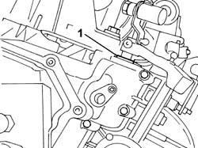
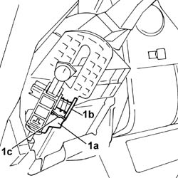
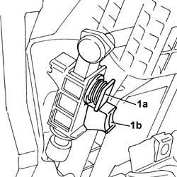
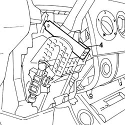

2125C10 TRANSMISSION HAND CONTROL ASSEMBLY - ADJUSTMENT/INSPECTION AND EV. LUBIRCATION OF FIXINGS
- Path
- Procedures > 21 GEARBOX UNIT > 2125 MANUAL GEARBOX EXTERNAL CONTROLS > 2125C MANUAL GEARBOX EXTERNAL CONTROL (CABLES) > 2125C10 TRANSMISSION HAND CONTROL ASSEMBLY - ADJUSTMENT/INSPECTION AND EV. LUBIRCATION OF FIXINGS
- Kind
- repair procedure (removal / refitting; the operation number is the code)
- Applies to
- all engines; all production periods
- Interactive page
- https://sloeber94.github.io/elrnDB-fDct/en/#/244001042
Applies to: all engines; all production periods
- Position the vehicle on the lift.
- Place the gearbox in neutral.
Op. 7055B54 UNDER-ENGINE GUARD - R R
1. Place a 10 mm shim under the reverse gear engagement lever.

Applies to: all engines; all production periods
- Lower the vehicle.
Op. 7040A28 TRIM ON GEARBOX CONTROL PANEL - R.R.
1. Lower the lever (1a) and push the button (1b) forwards as far as the splining (1c).

Applies to: all engines; all production periods
1. Release the lever (1a) so as to lock the button (1b).

Applies to: all engines; all production periods
- Engage fifth speed.
1. Lower the lever (1a) and release the button (1b) from the splining (1c).
Applies to: all engines; all production periods
- Disengage fifth speed and engage first speed.
1. Lower the lever (1a) and push the button (1b) forwards as far as the splining (1c).
Applies to: all engines; all production periods
- Release the lever (1a) so as to lock the button (1b).
Applies to: all engines; all production periods
1. Position a 1.2 mm shim between the gear lever and the barrier.

Applies to: all engines; all production periods
- Send the gear lever into the end of travel position against the shim.
1. Lower the lever (1a) and release the button (1b) from the splining (1c).
Applies to: all engines; all production periods
- Raise the vehicle.
- Remove the shim positioned previously under the reverse gear release lever.
Op. 7055B54 UNDER-ENGINE GUARD - R R
- Lower the vehicle.
- Remove the shim positioned previously from the gear lever.
Op. 7040A28 TRIM ON GEARBOX CONTROL PANEL - R.R.
- Remove the vehicle from the lift.